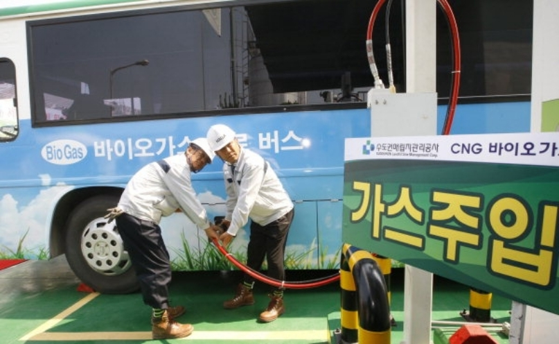

<div id="single-portfolio">
	<div id="portfolio-details" class="container">
		<a class="close-folio-item" href="#"><i class="fa fa-times"></i></a>
		
		<div class="row">
			<div class="col-sm-9">
				<div class="project-info">
					<h3>바이오가스 활용</h3>
					<p>선진국은 바이오 가스를 활용하는 방식은 체계적이고, 바이오 가스의 품질이 매우 좋으나 기반시설을 갖추기 위해서는 국가와 기업의 업무협약을 통해 막대한 자본을 투입해야 되고 꾸준한 관리와 기술개발이 필수적이다.</p>
					<p>개발도상국에서 적정기술로 받아들이기 위해서는 많은 문제점이 야기될 수밖에 없다. 따라서 이러한 문제점을 해결하기 위해서 바이오가스 생산을 위한 과정을 단순화 시킬 필요가 있었고, 체계적인 도면화 제작을 통해서 인도네시아의 현지공장에서 생산이 가능할 수 있는 모델 발굴을 발굴한다.</p>
				</div>
            </div>
		</div>
	</div>
</div>